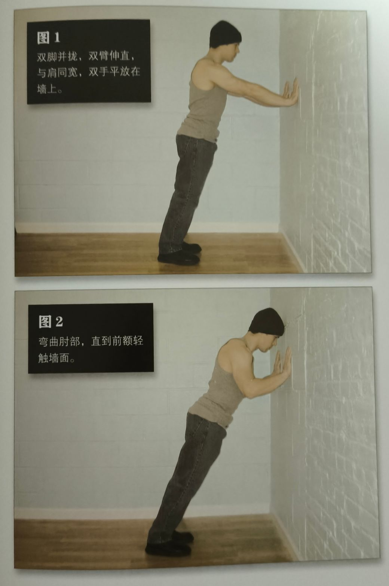
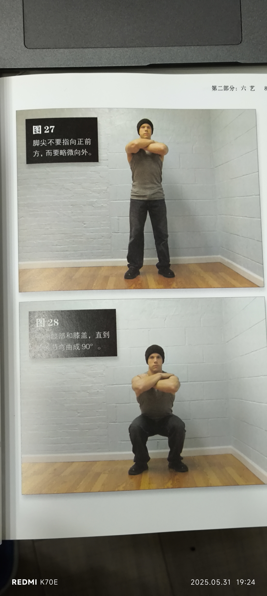
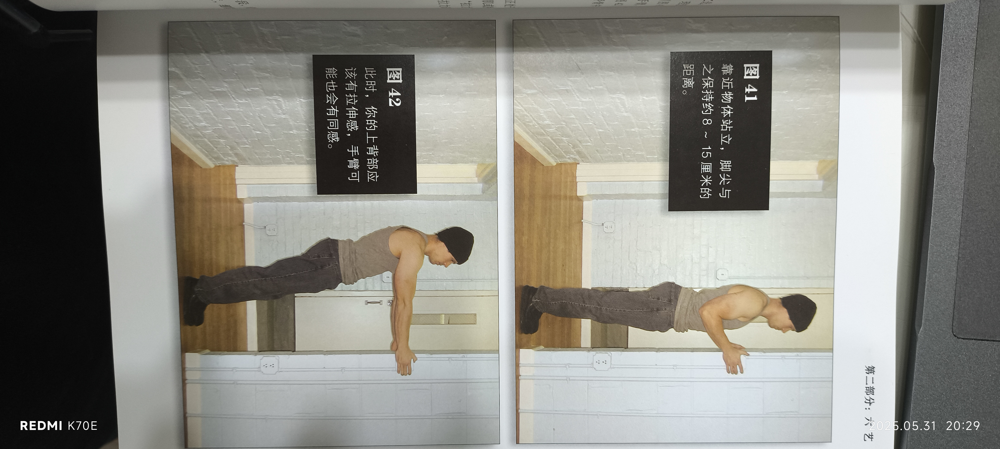
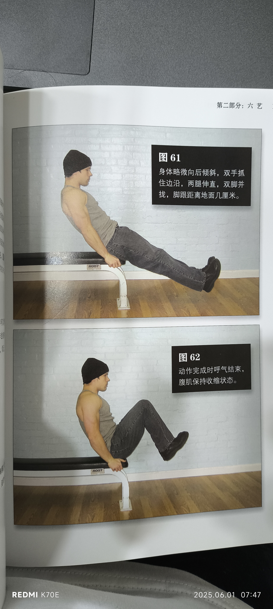

《囚徒健身》笔记
徒手锻炼，六艺十式，不得不说这本书确实让人兴趣满满。能练出“功能性力量”，真正在生活中能用得到的力量，而不只是好看的“死肌肉”，对我来说还是相当有吸引力的。
这里做一下笔记，写一下徒手锻炼的注意事项，然后定一下一个对初学者（我）可能的计划。
关于桥和倒立撑，桥，书中建议做到窄距深蹲和悬垂屈膝后才能开始做桥，这两个是深蹲和举腿的第六式；倒立撑，书中建议先掌握窄距俯卧撑或偏重俯卧撑后才开始做倒立撑，这俩是俯卧撑的第六、七式。
关于热身
使用动作的低强度版去进行热身。做 2-4 组，高次数。关节不好，年老，天气冷，就 3 组或 4 组，否则 2 组即可。一个一般的建议是，先做一组 20 次，再做一组 15 次，不用太卖力，用一半的力量即可（这是说，第一次选择能完成 40 次的动作，第二次选择能完成 30 次的）。
但对初学者（没有更低强度版的动作可用），用正在练习的动作即可，每组 12 次，2 组。
关于每个动作
耐心，要耐心，不要小看每一个动作，即使它看起来轻松到极点。不要急于求成，去榨干每个动作。
一般来说，使用 2-1-2 模式——2 秒上，1 秒暂停，2 秒下，不利用惯性，把压力完全地施加在肌肉和关节上。在第五式之后，就大概可以按自己的习惯来了。
在后面做变式等的时候，可以尝试一些爆发动作，但这些动作……应当在能轻易地完成正常动作时再进行，不然很可能受伤或留下长期毛病。
“只有当你的关节已经适应了一般的，速度平缓的动作之后，快速动作对你而言才是安全的。如果你喜欢，那么爆发式动作可以作为你训练时的补充，但它不应该成为主要训练方式。只做爆发式动作的人早晚会关节疼痛，咔咔作响。”
关于升级
前期大概可以每个月升级一级……？后面又不是这么说。
关于升级——
- 先达到初级标准
- 每周或每两周（难度更高可能得三四周）增加一次次数
- 达到中级标准的次数后，增加训练组
- 达到中级标准，增加第三个训练组
- ……直到满足升级标准
这个……很明显不可能，前面的故事中说一个月从墙壁俯卧撑升级，但他升级次数是 3x50，一周增加一次次数的话这得快一年了，所以看节奏来，总之要榨干自己。
或许还是每月一级先实操看看，这个实际上已经是比较稳妥的了。
关于计划
首先只尝试四艺——俯卧撑，举腿，引体向上，深蹲，均 2-3 组，每个训练日训练其中两个。
| 周一 | 周二 | 周三 | 周四 | 周五 | 周六 | 周日 |
|---|---|---|---|---|---|---|
| 俯卧撑 | 引体向上 | |||||
| 举腿 | 深蹲 |
我觉着这个实在是太保守了…………间隔一天去训练如何？
GPT 给我推荐了一个更加……费劲儿的计划，顺便往里面嵌入了 HIIT。我考虑按这个计划去做，试试嘛。
| 周一 | 周二 | 周三 | 周四 | 周五 | 周六 | 周日 |
|---|---|---|---|---|---|---|
| 俯卧撑 | 引体向上 | HIIT | 俯卧撑 | 引体向上 | HIIT | 完全休息 |
| 深蹲 | 举腿 | 深蹲 | 举腿 | |||
然后是研究四艺的每一艺的注意事项，以及第一式的细节。尽量保证……客观，作者可能有些过于吹嘘。
但囚徒健身 2 中其实也有一些内容可能最开始就要加入的，那本书我还没入手，等后面吧。
俯卧撑
俯卧撑练习上身。俯卧撑主要锻炼胸大肌，三角肌前束，胸小肌，肱三头肌。但其他部位的肌肉也能得到静力锻炼。
俯卧撑的一般原则：
- 避免诡异的角度和手部姿势，找到最适合自己的姿势
- 躯干，髋部，双腿始终要成一条直线
- 双腿并拢（不作弊！）
- 动作最高点时，双臂伸直，但肘部不要完全锁定而是微弯，同样的道理也适用于练腿时的膝盖，倘若锁死可能造成关节损伤，膝盖的半月板倘若损伤可能是不可逆转的
- 上推呼气，下降吸气（一般论）
- 使用 2-1-2 节奏提高动作质量，待超过入门级别后再加速，做快速、爆发动作。
注意：力量训练时的通用呼吸原则——推起、发力时呼气；下降、还原时吸气。
关于手势，正常地使用手掌做支撑（我手腕没受伤，也不希望它受伤啦，所以俯卧撑必须循序渐进）。但后面提升时可以改为用手指支撑。
第一式-墙壁俯卧撑
起始姿势：面对墙壁站立，双腿并拢，双臂伸直，与肩同宽，双手平放在墙上，手掌与胸等高。
动作和结束姿势：弯曲肘部，直到前额轻触墙面
反复：将自己推回到起始姿势
注意事项：手掌高度不要太高，太高时会导致大臂和身体的夹角错误（正常时夹角应当在 30-45 度左右），损伤肩袖。
初级标准：1x10
中级标准：2x25
升级标准：3x50

后面的变式动作看描述就觉得有趣 hhh
深蹲
其实大多数动作都以下身为基础，即使是上身动作，如推、拉，拳击等，有腿伤时也无法做到。
深蹲锻炼整个下半身。
注意事项：
- 不同幅度深蹲会锻炼不同肌肉。标准深蹲（全幅动作）能锻炼下半身所有肌肉
- 深蹲是臀部主导——想象夹紧屁股去发力，臀部后侧（臀大肌）发力
- （标准）深蹲动作进行到最低点时，大腿后侧会紧贴小腿，身体将无法继续降低
- 深蹲最高点时要完全伸直双腿（但不能锁死）
- 下蹲时身体前倾，要用肌肉力量有控制地下蹲
- 深蹲最低点时要想像自己在“坐着”而非“蹲”，膝盖和脚尖方向一致，不过脚尖，不内扣
- 最低点最难，但绝不能快速下蹲然后直接“弹”起来，这会损伤膝盖，要坚持 2-1-2 节奏——最低点停留 1 秒，并且要保证上半身不动，只靠腿部力量把自己推起
第四式-半深蹲
感觉前几个动作都怪怪的……准备从半深蹲直接开始，然而更加谨慎，避免快速升级——就定成……4 组 50 次后再升级到深蹲吧。
起始姿势：双脚分开，和肩同宽或略宽，脚尖向外
动作和结束姿势：保持背部挺直，弯曲髋部和膝盖（想象屁股向后坐），直到大腿水平。膝盖绝对不要向内（脚尖向外对此有益）。
反复：反向回到起始姿势
注意事项：脚尖朝外，背部挺直（不要弓腰塌腰）眼看前方，膝盖不过脚尖，发力时臀部主导。

引体向上
健身似乎可以把人体肌肉分为四类，拉力肌群，推力肌群，核心肌群，下肢肌群。（感觉这个区分深入人体动态的学习的时候会有意义）
引体向上是训练拉力肌群（肱二头肌，以及背部）的最好的动作。
引体向上以下巴超过横杆为基准。肘部要微微弯曲（不要锁死），同时肩部必须避免耸肩，要收紧双肩，让肩膀下沉（肩胛骨向下拉，向脊柱中线靠近），想象像收回翅膀那样夹紧肩胛骨。
要先锁住肩膀，再拉动身体。
引体向上和体脂很相关，减肥会有帮助。
引体向上很难，每一式花几个月掌握也是正常的。
怎么握都行，正握反握侧握（吊环），怎么舒服怎么来。
不要蹬腿，坚持2-1-2。到第五式后，尝试突破极限时可以蹬腿，使得多做一二三次，但只有最后才如此，而且蹬腿不算次数。但仍旧要保证有能正常下来的余力。
引体向上是肩部和上背部肌肉的发力，如果收紧双肩，这将会很自然，否则会变成更多靠肱二头肌发力。
第一式-垂直引体
用门框或者高栏杆，靠近它站立，脚尖距离8-15cm。
起始姿势：面对站立，双腿并拢，抓住该物体，最好双手与肩同宽，但无法如此也OK；此时手臂应当是弯曲的。
动作和结束姿势：身体慢慢后倾，此时伸展手臂，直到手臂几乎伸直，身体和地面成一定角度。
反复：并拢肩胛骨，弯曲手臂，把身体拉回到起始姿势
注意事项：肩部始终收紧！要注意上背部的感觉，不要全让肱二头肌抢风头。

举腿
举腿练身体“中段”，这么说是说它应当和上身下身关联起来，不能孤立练习。
中段肌肉负责稳定我们的身体。仰卧起坐和举腿均能练。
举腿的注意事项：
- 放下双腿时吸气，抬起时呼气，动作最高点时呼气完毕。两次动作之间可以喘几口气如果有必要。
- 直腿举腿难可能是腘绳肌过紧，可以先拉伸
- 吃饭和练习腹肌的时间间隔至少两小时
- 坚持2-1-2，最低点不要利用惯性
第一式-坐姿屈膝
尝试做了几个，这玩意儿比卷腹刺激多了。
起始姿势：坐在椅子或床的边缘，身体后倾，双手抓住边沿，两腿伸直，两脚并拢，脚跟距离地面几厘米。
动作和结束姿势：呼气（发力呼气），同时平缓地抬起膝盖，直到膝盖距胸部15-25cm，呼气结束。
反复：暂停1秒钟，吸气，反向运动回到起始姿势。
这个动作似乎允许完成动作时上身有微妙动作以保证重心稳固，见图。
注意事项：
- 双脚始终沿着一条直线运动，且始终悬空
- 呼吸节奏要正确。腹部始终收紧，动作要慢
- 两次动作之间可以喘几口气（所有中段练习均如此）
- 调整起始姿势和结束姿势之间的动作幅度以调整难度

本博客所有文章除特别声明外，均采用 CC BY-NC-SA 4.0 协议 ，转载请注明出处！